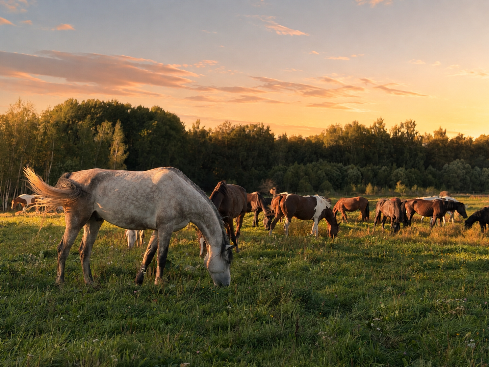
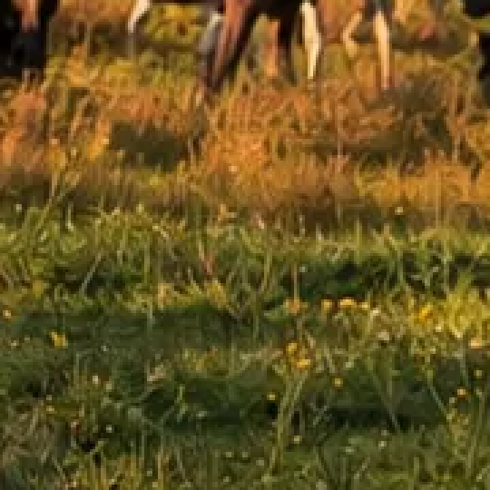

Фотография первого экрана: сжатая и оригинал
Слева от полоски — как сейчас на сайте, справа — оригинал из макета. Двигайте полоску пальцем.


Где разница видна
Это самый пострадавший участок фотографии — трава на свету, увеличенный втрое. На всей остальной картинке разница меньше.

Что это значит
Разрешение у обеих одинаковое — 1448 × 1086. Сжатие не уменьшает картинку, оно упрощает мелкие детали: травинки, листву, зерно. На глаз при обычном просмотре разница почти не видна, при увеличении заметна.
Цена вопроса — вес. Оригинал в 11,7 раза тяжелее. На хорошем Wi-Fi это незаметно, а на мобильном интернете у базы первый экран будет появляться заметно дольше — и именно первый экран гость видит раньше всего.
Промежуточный вариант: качество 92 — 372 КБ, почти вдвое тяжелее нынешнего, но заметно отличающихся пикселей становится 1,4 % вместо 9,2 %.